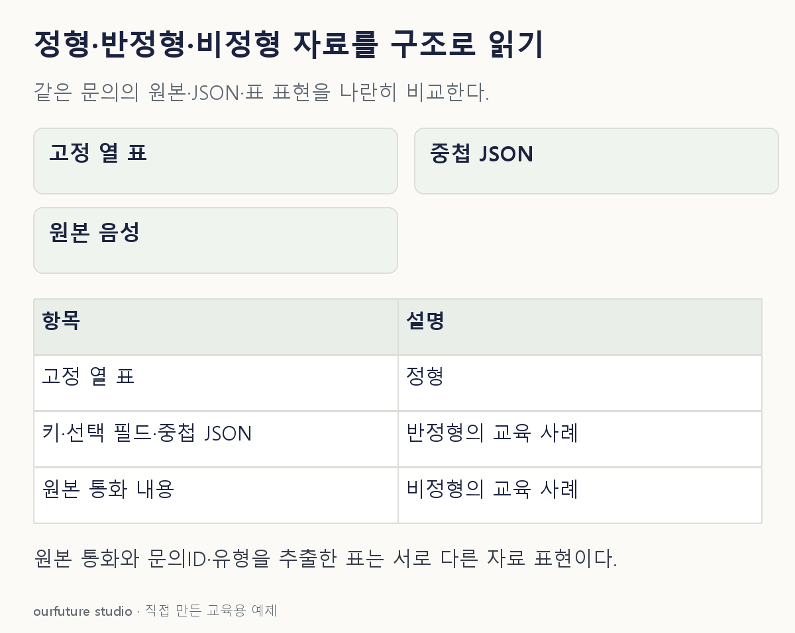

조건을 바꾸며 확인하기
통상적인 교육 예시이며 JSON 스키마나 파일 포맷을 직접 검사하는 판별기가 아니다.
설명 그림과 비교하기
아래 그림과 표는 고정된 설명 예제입니다. 기본·변형 중 어떤 조건인지 캡션을 읽고, 바꾼 입력의 결과는 계산 칸에서 확인하세요.

같은 문제를 직접 골라 보기
항목마다 키가 있고 일부 항목은 중첩되며 선택 필드도 있는 JSON 문서를 받았다.
조건을 더 바꾸면?
원본 통화에서 문의ID·유형을 추출해 고정 열 표로 만들었다면 추출 결과는?
변형 풀이 확인
정형 자료로 다룰 수 있다.
원본 음성과 추출된 표는 표현 구조와 분석 단위가 다르다.
고정 열인가, 키·태그인가, 내용 해석이 필요한가.